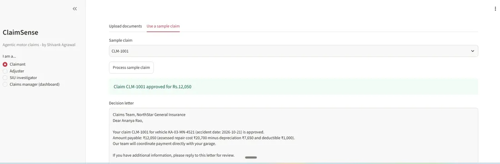

ClaimSense: agentic insurance claims processor
A LangGraph agent that processes motor-insurance claims end to end: reads the claim PDFs, checks the policy, decides coverage by citing policy clauses, calculates the payout, scores fraud risk, auto-approves small clean claims and routes the rest to an adjuster or the fraud unit.
- 100% routing accuracy and 100% fraud precision and recall on 20 labelled claims
- 100% payable-amount accuracy; about ₹0.27 and 16 s per claim
- Human-in-the-loop pause for adjusters; model chosen by evals, not by name
LangGraphAmazon BedrockECS FargateTerraformFastAPI
View on GitHub →